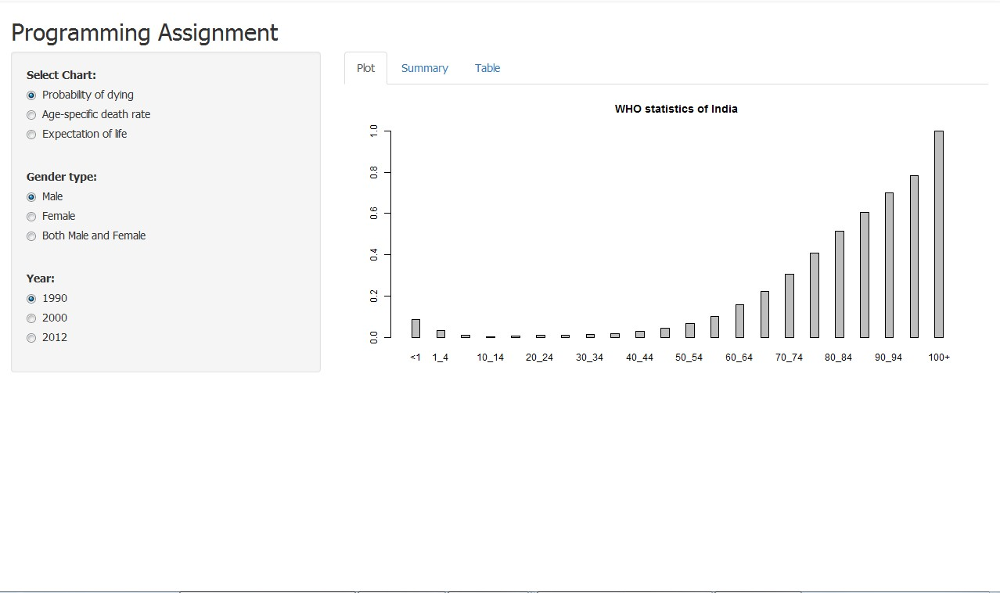

1. This assignment has been created for the Developing Data Products course, a part of Data Science Specialization by Johns Hopkins Bloomberg School of Public Health.
2.The Programming Assignment has been done in shiny and the this slidify presentation is regarding the same app.
1. Analysis has been done on data collected about mortality rate and life expectancy in India from WHO website.
2. This application has some filters in the side panel and the results are displayed in the Main Panel .
3. The Main panel consists of 3 Tabs for Plot, Summary Statistics and the Table for displying the data.
1. The data file for this app has also been uploaded as some cleaning has been done to generate the desired results.
2. The data file should be in the same directory for application to correctly run.
Three filters have been provided for filtering the results
1. Reactive function has been written that uses widget input and generates the output.
2. The reactive function will update the result whenever the original widget changes i.e. whenever user changes the input/filter values the output will be updates accordingly.
3. This application has some filters in the side panel and the results are displayed in the Main Panel.
